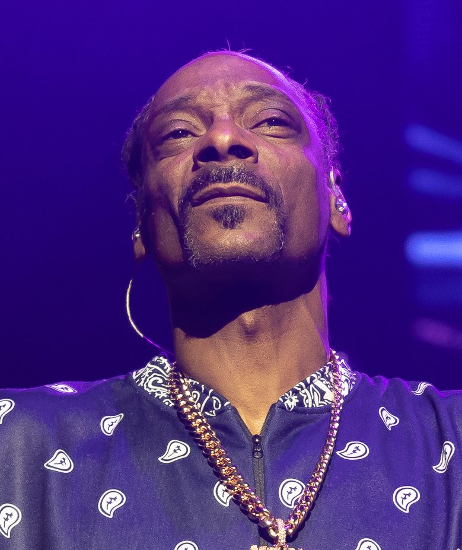

Snoop Dogg gets a Federal Government smackdown!


_(cropped)_(cropped).jpg){kind=link}
His guest appearance was a crowd favourite at this year’s Good Vibrations festival, and he was set for a quick return. But it appears controversial rapper Snoop Dogg is not going to be appearing at the MTV Australian Video Music Awards after all: because he failed the government’s character test!
Immigration Minister Kevin Andrews (much loved by the public for his role in implementing the WorkChoices changes) has cancel Snoop’s visa after he failed the character test. It’s probably got something to do with the no-contest plea Snoop delivered only two weeks ago on drugs and gun charges, which narrowly saved him from serving jail time…
“The reality is in relation to this man, that he was given a warning the last time, he has a whole string of convictions, and just two weeks ago I was told he was convicted on a number of charges again and sentenced to three years imprisonment on two, and three years imprisonment on another, with five years probation and a suspended sentence,” Andrews told Macquarie Radio.
“He has been denied entry into the United Kingdom because he was caught with others causing affray at Heathrow Airport. He doesn’t seem the sort of bloke we want in this country.”
A legitimate assessment of someone who has allegedly been involved in murder, robberies, drug dealing and whole lot of LA gangster activity? Nope, we just reckon Kevin Andrews is a party pooper!